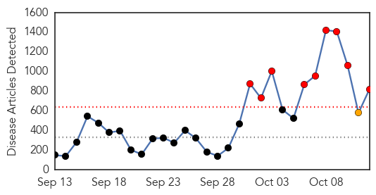
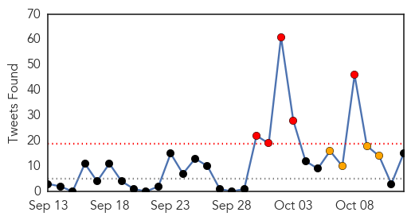
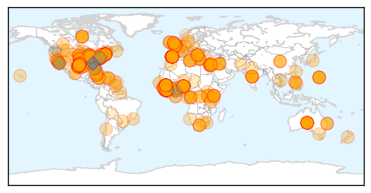
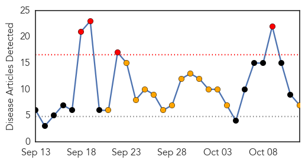
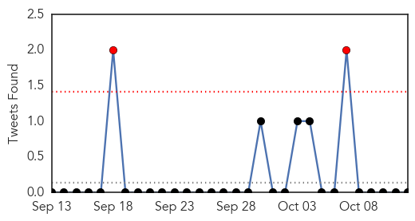

Ebola
30-Day Web Trend
9 alerts, 1 warnings

30-Day Twitter Trend
5 alerts, 4 warnings

Article Locations
Article Confidences
Top Articles:
- 1.000
- Second Ebola case confirmed. Texas health worker wore ‘full’ protective gear.
- 1.000
- Texas health worker becomes first person to contract Ebola in U.S.
- 1.000
- U.S. health care worker has Ebola
- 1.000
- Texas health worker becomes first person to contract Ebola in U.S.
- 1.000
- Protocol 'breach' blamed for US Ebola spread
- 1.000
- Second US Ebola case deals blow to global battle
- 1.000
- New York's JFK Airport Begins Screening Passengers for Ebola
- 1.000
- Dallas Ebola Case: Health Care Workers on Front Lines of Fight Against Deadly Virus Face High Risk
- 1.000
- What You Need to Know: How the Ebola Virus Is Spread
- 1.000
- Dallas Ebola Case: Health Care Workers on Front Lines of Fight Against Deadly Virus Face High Risk
- 1.000
- First US Ebola infection sparks fears about safety protocols
- 1.000
- Aid groups rally to fight Ebola in Africa
- 1.000
- Second Ebola case in Texas deals blow to global battle against disease
- 1.000
- Disease centre blames US Ebola case on ‘breach in protocol’
- 1.000
- Texas health worker becomes first person to contract Ebola in U.S.
- 1.000
- Harvard Vanguard Medical Associates in Braintree Confirms At Least One Ebola Symptom in a Patient Who Had Been to Liberia
- 1.000
- US Ebola outbreak: Pet found in Texas apartment of infected female health worker 'will be cared for', says mayor
- 1.000
- Ebola spreads in US: Second American case of deadly virus confirmed in tests on health care worker who treated Thomas Eric Duncan
- 1.000
- Ebola: Israel joins forces with Palestinians to combat epidemic
- 1.000
- Latest Updates Texas Ebola Patient Identified as 26-year-old Nurse
- 1.000
- Latest Updates CDC: Other Ebola Infections Possible Among Texas Health Workers
- 1.000
- Texas health worker becomes first person to contract Ebola in U.S.
- 1.000
- US Ebola case deals blow to global battle
- 1.000
- CDC confirms Texas healthcare worker positive for Ebola
- 1.000
- Boston patient does not appear to have Ebola
- 1.000
- Patient who sparked Boston hospital evacuation does NOT have Ebola
- 1.000
- Texas health care worker who treated Ebola patient there tests positive for the disease
- 1.000
- CDC confirms Texas healthcare worker positive for Ebola
- 1.000
- CDC confirms Texas healthcare worker positive for Ebola
- 1.000
- Texas Health Worker Caught Ebola Despite Wearing Full Protective Gear
- 1.000
- Second US Ebola case raises questions about safety protocols
- 1.000
- Texas nurse has Ebola after working with patient
- 1.000
- Texas nurse who had worn protective gear tests positive for Ebola
- 1.000
- Texas health worker becomes first person to contract Ebola in U.S.
- 1.000
- The Peninsula Qatar
- 1.000
- First US Ebola infection sparks fears about safety protocols
- 1.000
- PH adopting US testing, disease control methods on Ebola
- 1.000
- 2nd US Ebola case deals blow to global battle
- 1.000
- ‘Breach in protocol’ led to new Ebola infection, according to CDC
- 1.000
- First US Ebola infection sparks fears about safety protocols
- 1.000
- State Epidemiologist: Oklahoma Health Care System Prepared For Ebola
- 1.000
- Texas nurse who had worn protective gear tests positive for Ebola
- 1.000
- Texas health worker becomes first person to contract Ebola in US
- 1.000
- Texas health worker is positive for Ebola, would be 1st Ebola transmission in U.S.
- 1.000
- Ebola scare patient to be discharged, suffers from Malaria
- 1.000
- First US Ebola infection sparks fears about safety protocols
- 1.000
- For Ebola caregivers, enormous fear, risk and bravery
- 1.000
- Texas health worker becomes first person to contract Ebola in U.S.
- 1.000
- Texas nurse who had worn protective gear tests positive for Ebola
- 1.000
- Texas Nurse Tests Positive for Ebola – First Case Contracted on U.S. Soil
Showing top 50 articles...
Top Tweets:
- 0.942
- What is Ebola? Check out this factsheet on Ebola virus disease (EVD): http://t.co/0BKpcZgDiT EbolaResponse
- 0.930
- Ebola: Fighting the virus with facts and soap in Sierra Leone http://t.co/n88H1SGr1s
- 0.904
- DC is Shaking Ebola Off! ShakeEbolaOff EndEbolaNow ebola westafrica (repost from bohemianpassage) http://t.co/bAkMtnvaAh
- 0.851
- Health workers caring for Ebola patients can do so safely, but it requires meticulous adherence to infection control procedures.
- 0.841
- RT: One of the health workers who treated Duncan in Dallas has contracted Ebola so brace for TV fear onslaught.
- 0.805
- RT: Health workers caring for Ebola patients can do so safely, but it requires meticulous adherence to infection control pro…
- 0.805
- RT: Health workers caring for Ebola patients can do so safely, but it requires meticulous adherence to infection control pro…
- 0.752
- RT: A rant to those of *you* who may read this & be in a position to act to stop Ebola virus disease in West Africa http://t.co…
- 0.746
- RT: Texas Health Worker Tests Positive for Ebola http://t.co/FJZXbFUkGg
- 0.743
- RT: Texas health care worker tests positive for Ebola: http://t.co/TylZMC7Ppi
- 0.738
- RT: More about the Cuban doctors in Sierra Leone and voluntary nature of their service for ebola outbreak | http://t.co/eL…
- 0.679
- RT: Patients w/ Ebola should be cared for in facilities where health care workers have been specially trained. It's too e…
- 0.678
- RT: New Texas Ebola patient wore protective gear, complied with CDC guidelines, Texas Health's Dr. Dan Varga says - live video
- 0.677
- AFD Blog `Secondary Transmission: Dallas HCW Tests Positive For Ebola' http://t.co/dKCddavdtJ
- 0.657
- Texas healthcare worker who treated Thomas Eric Duncan tests positive for Ebola http://t.co/QmiEX1ukRg
- 0.610
- CDC will continue to ramp up education and training of health care workers so they can safely & effectively care for Ebola patients.
- 0.601
- Yes, it's race issue. MT Sad, ugly truth: more have to die of ebola in rich countries before we face up to crisis in West Africa.
- 0.586
- I am deeply concerned that a healthcare worker in Texas has tested preliminarily positive for Ebola.
- 0.584
- How do ppl become affected with Ebola? Read FAQ here: http://t.co/2TMOL0a2i3 EbolaResponse
- 0.582
- there's no end in sight to the ebola crisis. @elizcohencnn investigates possible missteps in dallas today on sgmd -- 730am et
- 0.547
- CDC lab tests confirm that the healthcare worker at Texas Presbyterian Hospital is positive for Ebola. http://t.co/uAa9QNFzID
- 0.545
- Ebola infections in health workers occur when there is a breach in protocol. CDC will be investigating how this may have occurred.
- 0.542
- The Ebola outbreak in graphics http://t.co/ufhiIOFA12 h/t http://t.co/i39GjnrcYT
- 0.541
- RT: I am deeply concerned that a healthcare worker in Texas has tested preliminarily positive for Ebola.
- 0.541
- AFD Blog `Dallas Ebola Press Conference & Hospital Statement' http://t.co/rtaZ7l3jCL
- 0.533
- RT: "No country, no organization can tackle Ebola alone” - Jan Eliasson to UNGA on EbolaResponse http://t.co/epe2J6jvTo
- 0.520
- RT: All passengers arriving in New York from Guinea, Liberia, and Sierra Leone will now be screened for Ebola: http://t.co/OiM6QH…
- 0.518
- RT: CDC lab tests confirm that the healthcare worker at Texas Presbyterian Hospital is positive for Ebola. http://t.co/uAa9Q…
- 0.518
- RT: CDC lab tests confirm that the healthcare worker at Texas Presbyterian Hospital is positive for Ebola. http://t.co/uAa9Q…
- 0.518
- RT: CDC lab tests confirm that the healthcare worker at Texas Presbyterian Hospital is positive for Ebola. http://t.co/uAa9Q…
- 0.517
- This unwelcome virus is risking the very core of our humanity–-human touch and connection. http://t.co/11Wh5cTmIl endebolanow ebola
- 0.505
- At UNGA briefing officials say Ebola virus is “far ahead” of the global Ebolaresponse http://t.co/j4ubQBRF8e
- 0.504
- Patient quarantined, taken to Boston in ‘Ebola protocol’ http://t.co/js7nNaJJds
Influenza
30-Day Web Trend
4 alerts, 14 warnings

30-Day Twitter Trend
2 alerts, 0 warnings

Article Locations

Article Confidences

Top Articles:
- 0.995
- As another flu season approaches, health tech will play an educational role
- 0.995
- Why this expert is against making flu shots mandatory for health-care workers
- 0.994
- Michigan toddler dies from enterovirus D68
- 0.993
- Michigan toddler dies from enterovirus D68
- 0.988
- Once rare, enterovirus D68 sickens nearly 700 across U.S. — most children
- 0.964
- 1918 flu felled hundreds
- 0.925
- Viewpoint: The deadly disease that killed more people than WW1
Top Tweets:
-
No tweets found for Oct 12, 2014